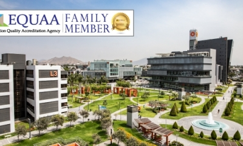

04 de Septiembre de 2024

ULIMA
Ulima se une a la red internacional de Equaa y...
La Universidad de Lima se incorporó como miembro académico a Equaa (Education Quality Accreditation Agency), la agencia acreditadora internacional especializada en programas...